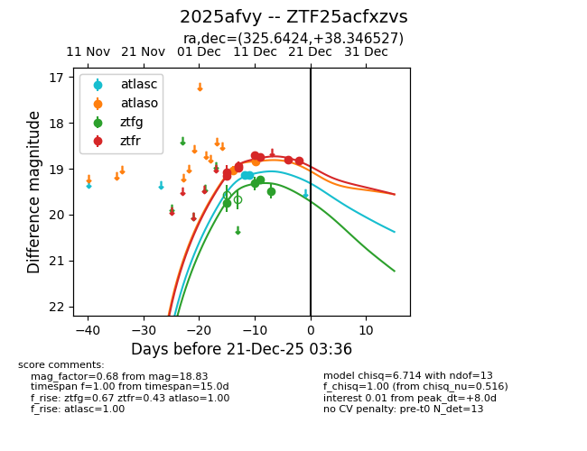
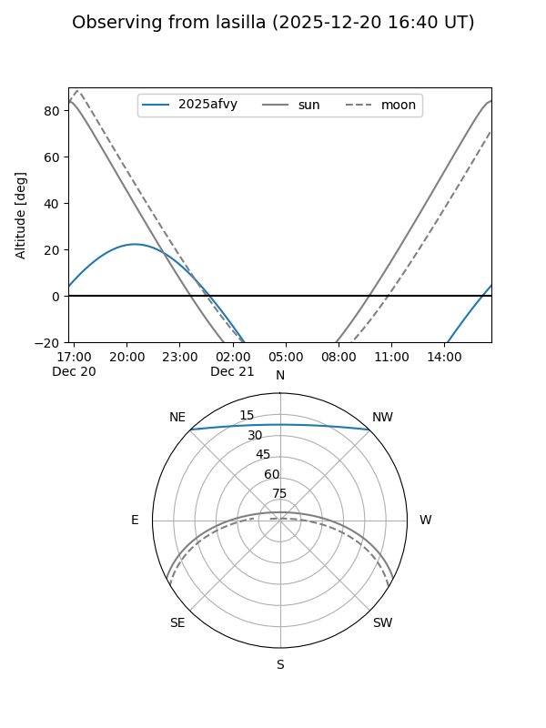
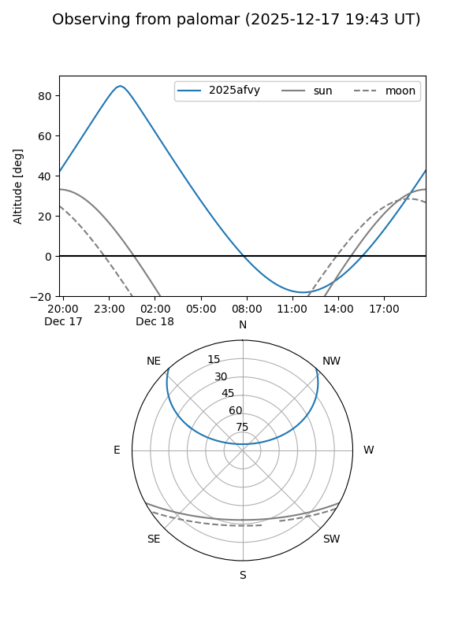
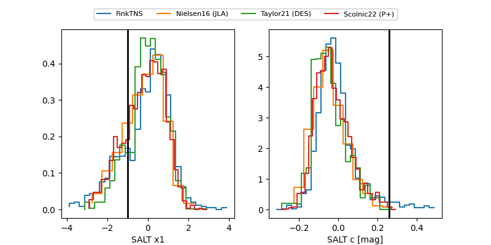

2025afvy
Target 2025afvy at 2025-12-20 10:45
Aliases and brokers:
FINK: fink-portal.org/ZTF25acfxzvs
Lasair: lasair-ztf.lsst.ac.uk/objects/ZTF25acfxzvs
ALeRCE: alerce.online/object/ZTF25acfxzvs
TNS: wis-tns.org/object/2025afvy
YSE: ziggy.ucolick.org/yse/transient_detail/2025afvy
alt names
ZTF25acfxzvs (ztf,fink_ztf)
2025afvy (tns,yse)
Coordinates:
equatorial (ra, dec) = 325.6424,+38.34653
equatorial (HMS+DMS) = 21:42:34.19,+38:20:47.50
galactic (l, b) = (87.0285,-11.02245)
Flags:
Photometry:
last atlasc=19.14, atlaso=18.84, ztfg=19.48, ztfr=18.83
2 atlasc, 2 atlaso, 4 ztfg, 8 ztfr detections
Lightcurve

Visibility


Additional plots
